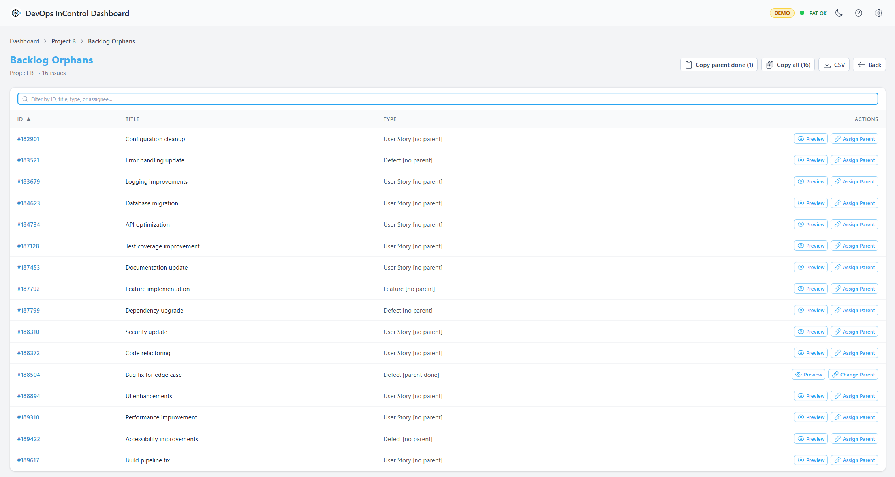
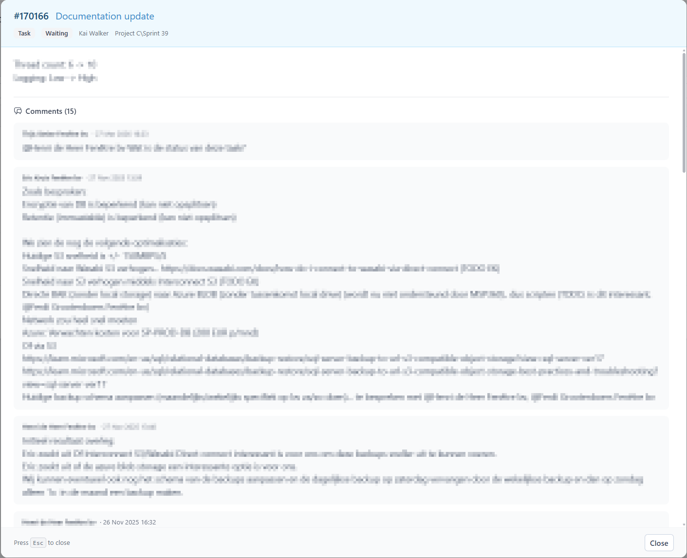

Viewing Flagged Issues
When you click on a check badge on the Dashboard, you are taken to a detailed list of all the work items flagged by that check. This screen helps you review and act on each item.

A list of flagged work items for the Orphan Check.
How to Use It
- The header shows the check type and how many items were flagged.
- Use the Search bar to filter by ID, title, type, or assignee.
- Click a column header to sort the table.
- Click a work item ID to open it directly in Azure DevOps.
Available Actions
| Action | When Available | What It Does |
|---|---|---|
| Preview | Orphan Check | Opens a preview modal showing the work item's full description, comments, and metadata without leaving the page. |
| Copy parent done items | Orphan Check | Copies a list of items whose parent is Done, for easy pasting into a message. |
| Copy all items with links | Orphan Check | Copies all flagged items with clickable Azure DevOps links. |
| Send email | Missing Estimate Check | Sends a reminder email to the assigned person asking them to add an estimate. |
| Assign Parent | Orphan Check (no parent) | Opens a dialog with smart candidate suggestions ranked by relevance. Select a parent to link the work item. |
| Change Parent | Orphan Check (parent Done) | Same as Assign Parent, but for items whose parent is already Done — lets you re-parent them to an active item. |
Work Item Preview Modal
The Preview button (available on the Orphan Check) opens a large modal showing the full details of a work item without leaving the page:
- Header bar — Coloured header showing
#ID Title, work item type badge, state badge, assigned person, and iteration path. Tags appear as coloured pills below. - Description — Full rich-text description rendered with images and formatting. If no description exists, shows "No description available."
- Comments — All comments shown chronologically with author and date.
- Footer — Shows "Press Esc to close" on the left and a Close button on the right.

The work item preview modal with coloured header, description, and comments.
Tagging Items
You can add tags to work items directly from this screen to help you track them. Tags are saved back to Azure DevOps. See Working with Tags for more details.
What the Table Columns Mean
| Column | Description |
|---|---|
| ID | The Azure DevOps work item number. Click to open it. |
| Title | The name of the work item. |
| Type | Task, Bug, User Story, etc. |
| Assigned To | Who is responsible for this item. |
| State | The current workflow state (New, Active, Resolved, etc.). |
| Iteration | Which sprint this item belongs to. |
| Created | When the item was created. |
Tip
Use the breadcrumb navigation at the top to quickly jump back to the Dashboard or to other checks for the same project.